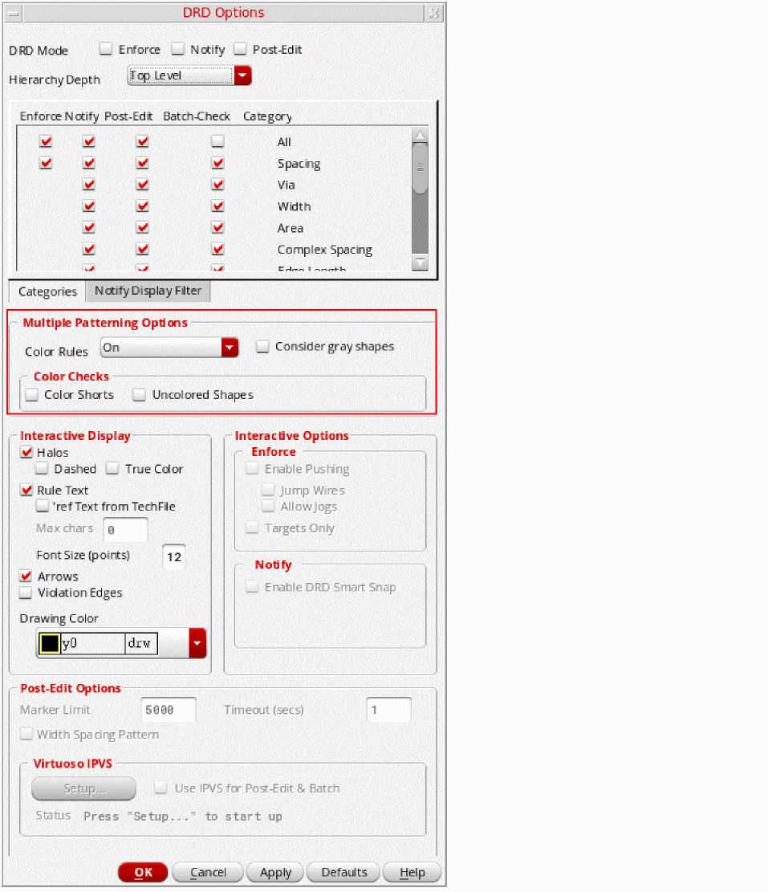
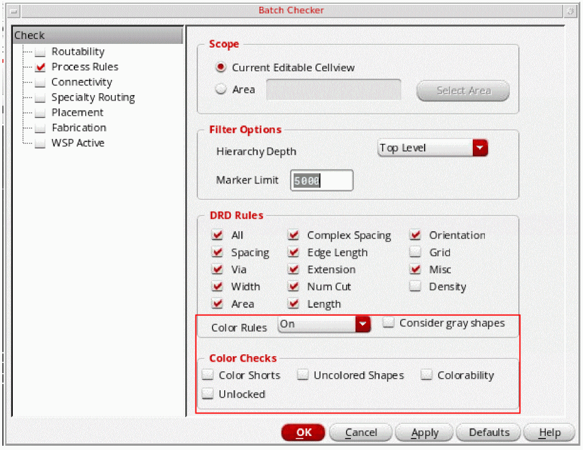

Methods to Check Multiple Patterning Violations
The following section describes the two methods to check for multiple patterning violations:
Color-Aware DRD Edit
To use DRD to check for multiple patterning violations, ensure that same-mask spacing constraints are set in the technology database.
In Enforce and Notify modes, DRD can provide visual feedback to prevent certain types of multiple patterning violations.
In Post-Edit and Batch modes, DRD can report multiple patterning violations as annotation markers in the workspace and in the Annotation Browser.
To check for color violations in enforce, notify, or post-edit modes,
-
Choose Options – DRD Edit. The DRD Options form appears.
 - Choose one or more DRD modes (Enforce, Notify, or Post-Edit).
- Choose Multiple Patterning Options, as described in DRD Color Checks.
- Click OK or Apply.
- As you modify the design, annotations will appear when multiple patterning violations are detected. If Post-Edit was selected, annotation markers can also be viewed in list form in the Annotation Browser. For more information, see Using the Annotation Browser to View Multiple Patterning Violations.
-
Choose Options – DRD Edit. The DRD Options form appears.
To check for color violations in batch mode,
-
Choose Verify – Design. The Batch Checker form appears.
- Choose Color Rules and Color Checks, as described in DRD Color Checks.
- Click OK or Apply. DRD checks the design in batch mode.
-
Choose Verify – Design. The Batch Checker form appears.
Pegasus Interactive
Pegasus Interactive uses sign off DRC rules to verify the design. The rule deck must include multiple patterning rules in order to check for coloring violations.
Pegasus Interactive checking is run on demand from the Pegasus Interactive toolbar in Virtuoso. The violations, generated by Pegasus Interactive can be displayed as markers in the layout and the Annotation Browser, as described in Using the Annotation Browser to View Multiple Patterning Violations.
For details on using Pegasus Interactive, including requirements, setup, the Pegasus Interactive toolbar, and customizing the rule deck and the environment, see
Related Topics
Using the Annotation Browser to View Multiple Patterning Violations
Methods to Fix Multiple Patterning Violations
Methods to Verify the Consistency of Color Assignments
Checking CDF Color and Net Color Constraint
Return to top